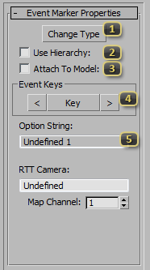
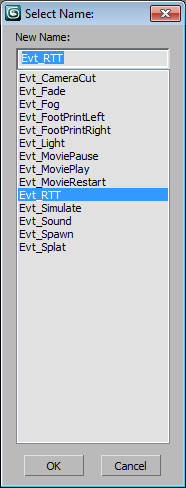

Node: SC2Event
The SC2Event Node can be found in the Helpers create panel. It is a helper object that can hold an animated track for triggering game events from the model file. There are multiple event types, and most are for debugging or deprecated by newer Starcraft II Cutscene Editor events but a few are still useful.
Event Marker Properties
The SC2Event helper will create additional UI based on type chosen. The events are sent to the Starcraft II game with a single line of text that is the summary of the event data.
Change Type allows picking from a list of event types. Each event type in the list are described below. The name of the node will change based on event type and the name should not be changed by other means.
Use Hierarchy: is unused.
Attach To Model: is unused.
Event Keys has three buttons to control and navigate event animation tracks.
- < moves current time to the previous key.
- Key will set a key at the current time. When a key is set, the button will turn red on that frame.
- > moves current time to the next key.
Option String is a text field to add specific data to the event.
Event Types
This pop-up lister allows picking the event type by name.
New Name is the current selected event type.
- Evt_CameraCut This is a special event type that causes the exporter to create keys for cameras and objects separated by 1 millisecond. This is used for instances where you want things to move instantly and not blend over 33 milliseconds the normal key sample rate for SC2ArtTools. This CameraCut Event is used to make cinematic camera cuts in the same model animation. To make an extra key only for the camera, link this node to the camera. To make an extra key for all objects in the model, leave this event unlinked in the scene.
- Fade is a way to trigger a full screen fade to and from black.
- FootPrintLeft and FootPrintRight are deprecated event type. It is recommended to use Data events in StarCraft II with Foot Attachment points.
- Light event type can change the world light to a new lightset when this event key goes off. Type in the Option String the name of the light set as it appears in Starcraft II Editor Data.
- MoviePause is a deprecated event type. Can pause a video applied to a model. That same result can be animated on the material more easily.
- MoviePlay is a deprecated event type. Can resume play of a video applied to a model. That same result can be animated on the material more easily.
- MovieRestart can restart a video to the first frame.
- RTT is a deprecated event type. RTT is Render-To-Texture and this event and turns on a Render-To-Texture buffer. The Option String is made up of the model camera name and the Render Target Map Channel from 1 to 7.
- Simulate triggers a physics on for all active SC2physics objects in the model.
- Sound event will play a sound when triggered. Requires SC2Data sound ID in the Option String.
- Spawn is a deprecated event type. Spawn event will create an instance of a model when triggered with correctly setup Starcraft II Editor Data.
- Splat is a deprecated event type. The Splat event can generate a data created SC2Projector with correctly setup Starcraft II Editor Data.